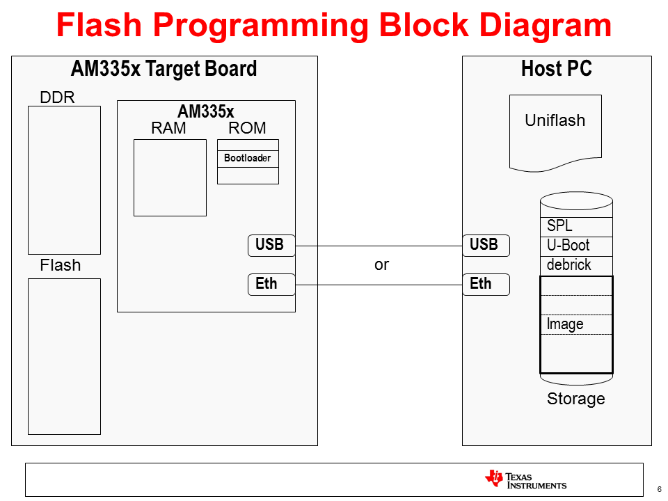
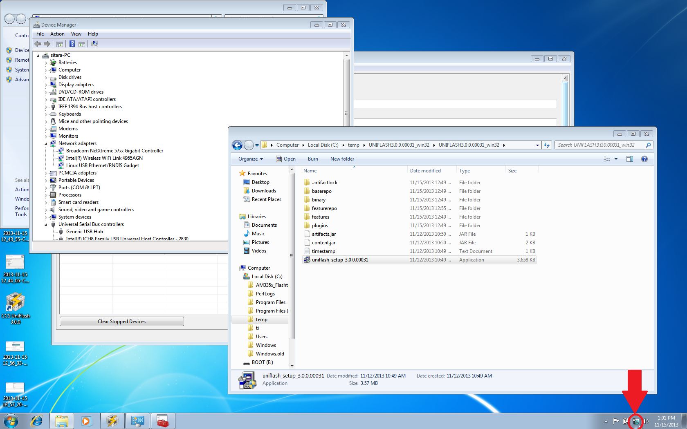
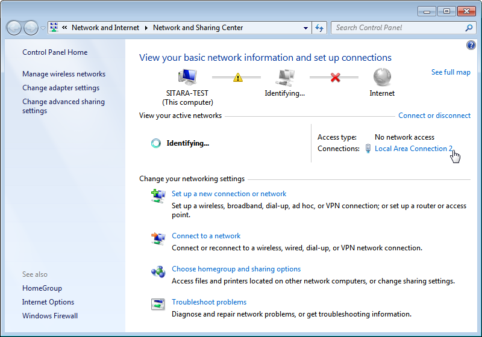
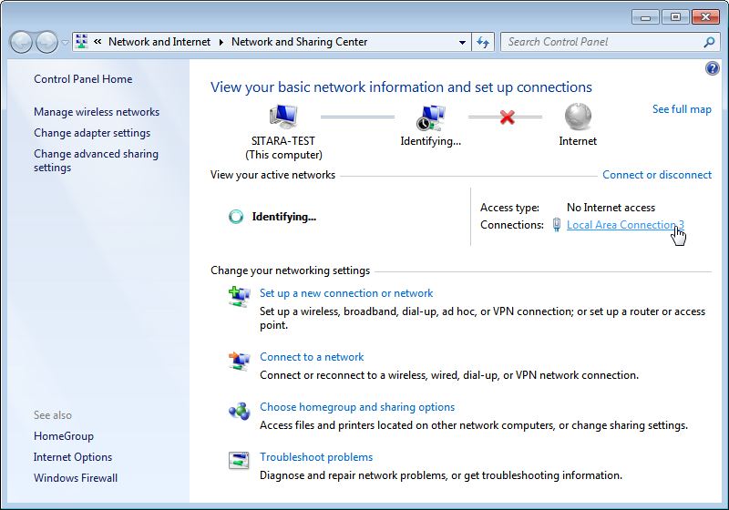
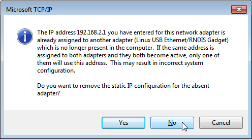

3.4.2. Flash Tools¶
3.4.2.1. AM335x/AM437x Flash Programming¶
Introduction
This document describes how to develop a flash imager for the Sitara AM335x/AM437x SoCs and how to prepare an image to be flashed. This information is focused on the Linux developer that is creating these images. The images, once created and tested, can be used to program Flash memory (NAND, NOR, SPI, QSPI or eMMC) attached to an AM335x/AM437x SoC on a target board. The flasher application and image to be flashed are transferred to what is expected to be a blank board (the flash has not been programmed before) via Ethernet or USB (using the Remote NDIS networking protocol). The flasher application and image can be hosted on either Linux or Windows. For Linux, we use standard tools that most developers are already familiar with for development, and this setup is further documented here. For Windows, we use CCS UniFlash. For more information on using CCS UniFlash with Sitara Devices, please see the Sitara Uniflash Quick Start Guide.
The overall process of programming the flash is broken into two parts:
- Developing the images to both be programmed and do the programming
from the AM335x/AM437x SoC. This is usually done by the Linux
developer responsible for creating the images. This process varies
somewhat depending on the desires of the Linux developer. There are 2
options defined below:
- Using U-Boot as the primary source of the flasher image. This works well for NAND, NOR, and (Q)SPI. It is the simplest process to use. Learn more about it here
- Using a Linux kernel and minimal filesystem. This is recommended for eMMC, but may have advantages in other situations as it makes the full power of Linux available to the flasher program. This is a bit more complex and may require a bit more porting. This process is documented here.
- Actually programming the images using Uniflash v3. This tool runs on a Windows PC and serves the images to the target board that is being programmed. This process is detailed in the Sitara Uniflash Quick Start Guide.
3.4.2.2. Sitara Uniflash¶
Introduction
This document describes a process to program Flash memory (NAND, NOR, SPI, QSPI and eMMC) attached to a TI AM335x or AM437x processor on a production target board. This is possible using either the Ethernet interface or the USB device interface available on the AMxxxx SoC connected to a host PC. This document is intended to guide those that want to program the flash memory on new boards for production.
The overall process is broken into two parts:
- Developing the images to both be programmed and do the programming from the AM335x or AM437x SoC. This is usually done by the Linux developer responsible for creating the images. This process is documented here.
- Actually programming the images using Uniflash v3. This tool runs on a Windows PC and serves the images to the target board that is being programmed. This process is detailed below.
Overview
Uniflash is one part of an overall system that includes the Windows PC on which Uniflash runs, a target board including an AM335x/AM437x Sitara Processor and flash memory to be programmed, and a USB or Ethernet connection between the two. It is assumed that the flash on the target board is blank, or needs to be overwritten. Therefore, the target board has nothing that it can execute except the bootloader stored in the ROM on the AM335x/AM437x SoC. So, the ROM bootloader will use either USB or Ethernet to request files served by Uniflash on the Host PC and once transferred, executed on the target board. The below diagram should help.
In the above diagram, take notice of the files stored on the PC. There are really 2 different images that will be used:
- The image to write the flash on the target board, which is composed of the SPL, U-Boot, and debrick or flasher files indicated. These will be pulled over by the bootloader in ROM when the target board is powered on (assuming the boot settings are set up to boot from USB or Ethernet).
- The image to be written. This is shown as “Image” and is pulled over from the Host PC. Once on the target, it will be broken up and written to the appropriate places in flash as determined by the flasher program above (mainly by the debrick or flasher script). This image will also likely contain a SPL and U-Boot, as well as a Kernel (zImage) and Root Filesystem. This is the image that will execute out of flash once it has been written and will vary depending the needs of the target board.
Using Uniflash to Program Flash Images
Once the images to be programmed into perpetual memory have been developed, an environment can be set up to program these images. This process involves a Client/Server type setup where a host PC serves as the server and the target board based on the AM335x/AM437x SoC serves as the client. The connection between the two can either be USB or Ethernet based. Since the USB protocol supported is Remote NDIS (or RNDIS hereafter), which is network (TCP/IP) based similar to Ethernet, both processes will be fairly similar.
In either configuration, the host PC provides the following services to the target through the Uniflash tool:
- BOOTP Server – to provide an IP address and image name based on the Vendor ID requested by the AM335x/AM437x ROM code
- DHCP Server – to provide an IP address to the target
- TFTP Server – to serve up images located on the host PC as they are requested by the target board
- GUI - friendly GUI environment for configuration and status
Host PC Setup
Here are some step by step instructions to configure a setup to flash target boards using a Windows PC. These steps were validated using Windows 7, however the steps should be similar for other versions of Windows.
Install Uniflash
Uniflash is a tool provided by Texas Instruments that supports multiple platforms and flash configurations. Support for Sitara devices was added in Uniflash version 3.0 and beyond.
- Download Uniflash v3 here.
- Extract the downloaded .zip archive to a temporary folder.
- Execute the Uniflash Setup program, uniflash_setup_3.3.0.00058.
- Click Next to accept the terms of the license agreement.
- Click Next to install into the default directory, c:\ti, or Browse to install somewhere else.
- Select Custom under type of Setup and click Next.
- Select Sitara AMxxxx processors and click Next.
- Verify that Sitara Flash Connection Support is checked.
- Click Next to verify your choices.
- Wait while Uniflash installs.
- Choose what options you’d like to have to start Uniflash (place on desktop, quick start, etc.)
- Uniflash is now installed and you should see something like this:
Preparing to Flash a Target Board
Now that Uniflash is installed, we need to make sure that it knows how to serve up the files needed to flash a target board. It needs to know where these files are located and how to send them to the target via either USB or Ethernet.
Here are the options for the Flash Servers Configuration that need to be properly set up:
- Network Interface IP - IP address that the Host Computer will use. Needs to correspond to the values used below to set up the Network Interface. The default value, 192.168.2.1, should be fine for most environments as it is a local IP Address.
- IP Lease - Amount of time an IP Address given to a target board is held for.
- DHCP IP Range Low - Low IP address in a range that will be given to a target board. Must be on the same subnet as the Network Interface IP of the Host Computer.
- DHCP IP Range High - High IP address in a range that will be given to a target board. Must be on the same subnet as the Network Interface IP of the Host Computer.
- TFTP Server IP - Should be the same as the Network Interface IP of the Host Computer.
- TFTP home folder - Folder on the host computer where the files to be served to the target board are located.
- Control Port - Socket used to allow the GUI to interact with servers. Should not be changed.
Given these definitions, set the values in Uniflash to match your environment. Note: that in most instances the default values should be fine and are recommended.
You must place the files to be served by the host PC to the target board in the TFTP home folder directory above. In most cases, you should have been given the below files to serve to the target board by the linux development team (these files can vary and are just an example):
- MLO or SPL
- A U-boot image
- A kernel image (if using a Linux kernel for flashing) and associated Device Tree file
- debrick.scr or flasher.sh
- Flash Image files (contains the images to be flashed on the target board)
AM437x Additional Setup
If you are using an AM437x device you the target board to be flashed, there are a couple of extra steps in order to pair Uniflash with the AM437x ROM code.
- After installing Uniflash, open the opendhcp.cfg file under the install directory, in the third_party\sitara folder using a text editor like Notepad.
- Add the two lines below to the [VENDOR_ID_TO_BOOTFILE_MAP]
section toward the top of the file:
- AM43xx ROM=u-boot-spl-restore.bin
- AM43xx U-B=u-boot-restore.img
Note:The 10 characters before the “=” must be exact as this is what is sent from the ROM code to request the next file in the flash procedure. The “x’s” in the AM43xx part are lower-case.
Flashing a Board using Ethernet
To program a board using the Ethernet interface between the Host PC and the target board, a private network between the two will be established. The HOST PC is set up with a Static IP address on one NIC (Network Interface Card) and connected to an ethernet switch or directly to the target board. A router that assigns IP addresses should not be used as the host PC needs to provide this to boot the target board.
Here is what you will need:
- Host PC with Uniflash installed and an available ethernet port.
- The files used to program the board put in the TFTP home folder set up in Uniflash.
- 2 ethernet cables if using a switch and one if using a direct connection.
- Ethernet switch (optional). Note: This should not be a router, as the host PC needs to provide IP addresses.
- Target board(s) to be programmed.
- If Uniflash is not already running on the Host PC, start it.
- Click on New Target Configuration.

- Set Connection to Sitara Flash Connections and Board or Device to Sitara Flash Devices. Click OK.
- Make sure the Flash Server Configuration is set up properly.
- Connect the Host PC to the network switch (or directly to the target board if using a direct connection).
- Click on the Open Network and Sharing Center.
- Click on the Local Area Connection that corresponds to the ethernet connection. If you only have one, it should be the only one listed.
- In the Connection Dialog, Click on Properties.
- Select Internet Protocol Version 4 (TCP/IPv4) and choose Properties.
- Set the port to use a Static IP Address by selecting Use the following IP Address: and changing the IP Address: to 192.168.2.1. This setting should correspond to the Network Interface IP setting in Uniflash.
- Verify that the Subnet Mask is set to 255.255.255.0 and click OK.
- Click Close.
- Click Close one more time to get back to the Network Manager.
- Close Network Manager if you’d like as it should no longer be needed. The network is now set up.
- In Uniflash, enable the flashing capability by clicking on Start Flashing.
- Depending on your Windows Firewall settings, you may get the below two warnings for the servers being used (opendhcp and opentftp). If so, please click Allow access for both.
- Make sure the target board is powered and connect it via ethernet to the network switch (or directly).
- If everything is working correctly, the flashing process should start automatically on the board. You should see status feedback appear in Uniflash as the process progresses.
Note
The time the process takes to complete will vary considerably depending on a number of factors: the amount of data to be transferred to the target, the speed of the interface between the host and the target, the amount of data to be flashed, the write speed of the memory to be programmed, etc.
- To flash another target board, simply make a connection between it and the host PC through the switch. The board should start flashing automatically if powered and connected properly.
Flashing a Board using USB
To program a board using the USB interface between the host PC and the target board, the RNDIS protocol will be used to create a network connection over USB. A private network between the two will be established. The host PC is set up with a static IP address on one USB interface that ends up looking like a dedicated NIC (Network Interface Card) and connected directly to the target board.
Here is what you will need:
- Host PC with Uniflash installed and an available USB port.
- The files used to program the board put in the TFTP home folder as set up in Uniflash.
- A appropriate USB cable to connect the host PC and target board.
- Target board to be programmed.
In order to establish a USB based RNDIS connection between the host and target, an appropriate driver needs to be installed on the host. A RNDIS driver is provided with Windows. This driver needs to be associated with 2 different steps in the flashing process and may have to be installed multiple times. Essentially, as the Sitara Processor on the target board moves through different stages of flashing process, it looks like a different USB device to Windows and the driver may need to be associated for each step. If it is not, that particular stage in the process will not be able to communicate over RNDIS and the process will fail.
This driver association should be handled automatically for AM335x. For AM43xx devices, this is a more manual process documented below. Either way, these steps could provide helpful information for either devices if problems are encountered.
- If Uniflash is not already running on the host PC, start it.
- Click on New Target Configuration.
- Set Connection to Sitara Flash Connections and Board or Device to Sitara Flash Devices. Click OK.
- Make sure the Flash Server Configuration is set up properly.
- Connect the host PC to the powered target board using an appropriate USB cable.
- This will prompt Windows to install a USB driver if a target board has never been plugged into that particular PC and that particular USB port on that PC. More than likely for the AM437x devices, this attempt will fail.
- Use Device Manager to install a USB driver. To open Device Manager, click on Start –> All Programs –> Right Click on Computer and Select Properties.
- Click on Device Manager in the window that opens.
- Find the AM43xx1.2 Device listed in “Other Devices” per below. It will have a little yellow exclamation point on it indicating there is currently a problem with the device. Right click on it and select Update Driver Software….
Note
If the device is not listed, it is probably because the operation has already timed out. Simply power cycle the target board to restart the process.
- In the Update Driver Software dialog, choose Browse my computer for driver software.
- Click Let me pick from a list in the next window:
- Choose Network Adapter and click Next:
- Choose Microsoft Corporation as the Manufacturer and Remote NDIS6 based Device under adapter. Click Next:
- If you see the following warning, click Yes:
- You should receive a confirmation like below when the driver is successfully installed. Finally click Close.:
When the USB Driver for RNDIS is properly installed, it will create a new network interface. This can typically be seen in the lower right-hand corner of the toolbar:
This new interface needs to be configured with a static IP address. Click on the Networking icon in the toolbar, and then click on the Open Network and Sharing Center link.
Inside the Network and Sharing Center, click on the new Internet Connection:
Note: The number next to the “Local Area Connection” will depend on the number of network connections the computer has. If this is the only network connection (i.e. the computer does not have an Ethernet or wireless networking connection), then this would be “1”. In most cases, computers have either a wired or wireless connection that will take up spot #1. Therefore, the new USB RNDIS Network Connection will be #2. However, if the computer has multiple connections already, then this number could be higher.
In the Connection Dialog, Click on Properties.
Select Internet Protocol Version 4 (TCP/IPv4) and choose Properties.
Set the port to use a Static IP Address by selecting Use the following IP Address: and changing the IP Address: to 192.168.2.1. This setting should correspond to the Network Interface IP setting in Uniflash. Verify that the Subnet Mask is set to 255.255.255.0 and click OK.
Note: It is possible to use other IP addresses. However, the IP address used needs to match the Uniflash configuration. If you prefer to use another address, you will need to change those configurations as well.
Click Close.
Click Close one more time to get back to the Network Manager. Let’s leave Network Manager open for now.
In Uniflash, enable the flashing capability by clicking on Start Flashing.
Depending on your Windows Firewall settings, you may get the below two warnings for the servers being used (opendhcp and opentftp). If so, please click Allow access.
Now that the IP connection has been configured, the target board should request the first file from the Uniflash via TFTP over USB/RNDIS. This is typically the SPL or MLO file for the first stage of the AM335x bootloader. If you do not see a new Flash process start in Uniflash, you may need to power cycle the target board. This restart is only necessary because the driver and network set up did not complete quickly enough. Now that it is configured, you should be able to progress to the next steps.
Once the first file is transferred from Host to Target, it will take over execution on the target board from the ROM on the Sitara device. This will cause another instance of the USB RNDIS driver to get created. Windows should use the previous steps to associate the driver to the device and create another instance. It is easy to watch this process in Device Manager by watching the Network Adapters section. If this does not happen, and the device driver fails to associate properly, you’ll need to use the steps above to install the USB driver for the new device.
When the second instance of the driver comes up, the new network interface will need to be configured like we did above. Open the Network Connection and Sharing Center, if it is not already open.
Inside the Network and Sharing Center, click on the new Internet Connection:
Note: The number next to the “Local Area Connection” will depend on the number of network connections the computer has. If this is the only network connection (i.e. the computer does not have an Ethernet or wireless networking connection), then this would be “1”. In most cases, computers have either a wired or wireless connection that will take up spot #1. Therefore, the new USB RNDIS Network Connection will be #3. However, if the computer has multiple connections already, then this number could be higher. Each new USB connection can increment this number.
In the Connection Dialog, Click on Properties.
Select Internet Protocol Version 4 (TCP/IPv4) and choose Properties.
Set the port to use a Static IP Address by selecting Use the following IP Address: and changing the IP Address: to 192.168.2.1. This setting should correspond to the Network Interface IP setting in Uniflash. Verify that the Subnet Mask is set to 255.255.255.0 and click OK.
Note: It is possible to use other IP addresses. However, the IP address used needs to match the Uniflash configuration. If you prefer to use another address, you will need to change those configurations as well.
Click “No” if asked to remove other static configurations. Since we are using the same IP address for both RNDIS connections, Windows is trying to let us know that this is generally not a good idea. However, in this situation, the configuration ensures that both interfaces won’t be used at the same time.
Click Close.
Click Close one more time to get back to the Network Manager.
Now that everything is configured, the process should be able to complete. Take a look at Uniflash and you should see the process progressing forward. If not, it might be necessary to start the process fresh by power cycling the Target Board. With everything set up correctly on the Host PC at this point, the process should be able to proceed without issue.
- When the flash process is complete, simply disconnect the target board. It should be flashed and ready for further testing.
- To flash another target board, simply make a connection between it and the Host PC by plugging a new powered target board into the USB cable. The board should start flashing automatically if powered and connected properly. Note: This process is tedious to set up the first time. However, once the Host PC is configured properly, programming new boards is as simple as plugging them in and flashing them.
USB Flash Programming Notes
- The USB/RNDIS set up is specific to each port on a given computer. If you follow the process above using one specific port, only that port is set up. If you plug a target board into a different port, the above process will need to be completed for that new port. Therefore, it is best to use the same USB port to avoid having to duplicate set ups.
- Uniflash v3.0 only supports programming one board at a time using USB.
- If you have trouble with RNDIS reporting problems in Device Manager, it mihgt be necessary to delete the RNDIS Driver and follow the above steps again to re-install it.
- For this entire process to work, there has to be two USB devices associated and each of them need to have their network addresses set up correctly. Essentially, at different steps in the process, the USB connected target board looks differently to Windows and it needs to have a driver and network set up for each. You can check this using Device Manager for USB and Network Manager for networking.
Useful Links
- Sitara Flash Programming Linux Development for AM335x/AM437x to learn more about developing images to be flashed using this process.
- Sitara Linux Program SPI Flash on AM335x EVM to see a specific example of how to program the SPI Flash an a AM335x EVM.
- More Uniflash information is available here.